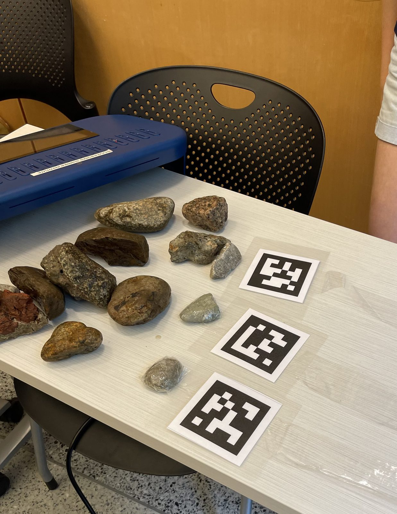
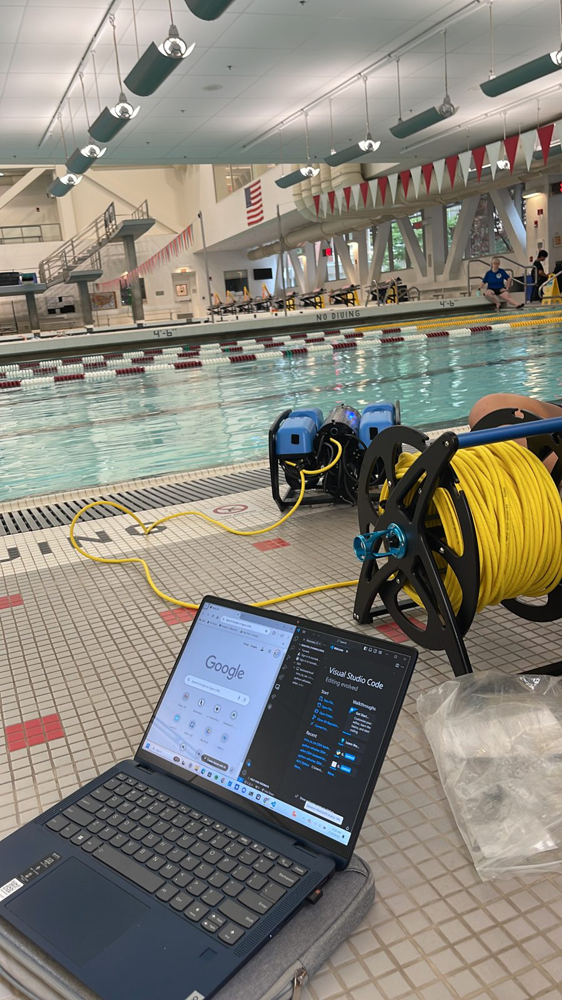
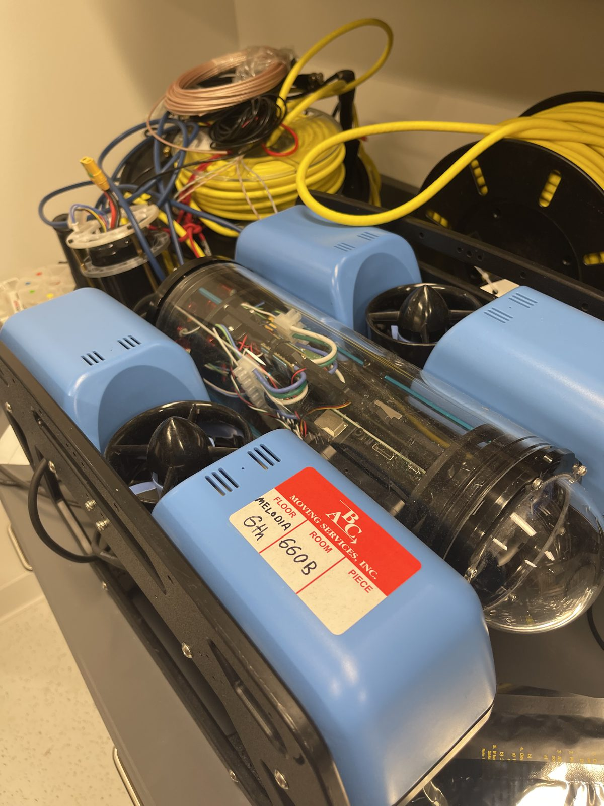
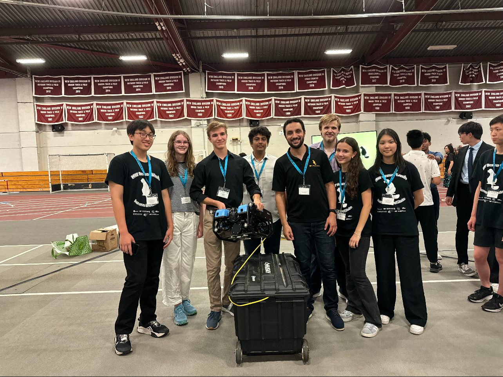
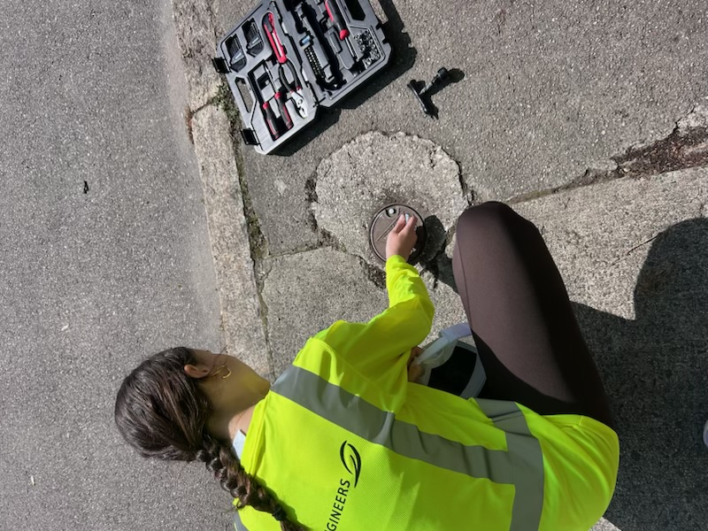
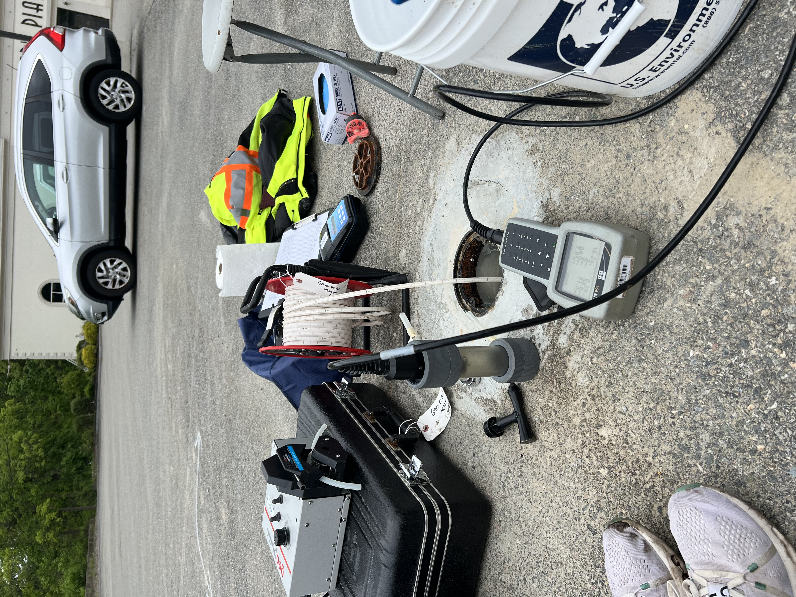
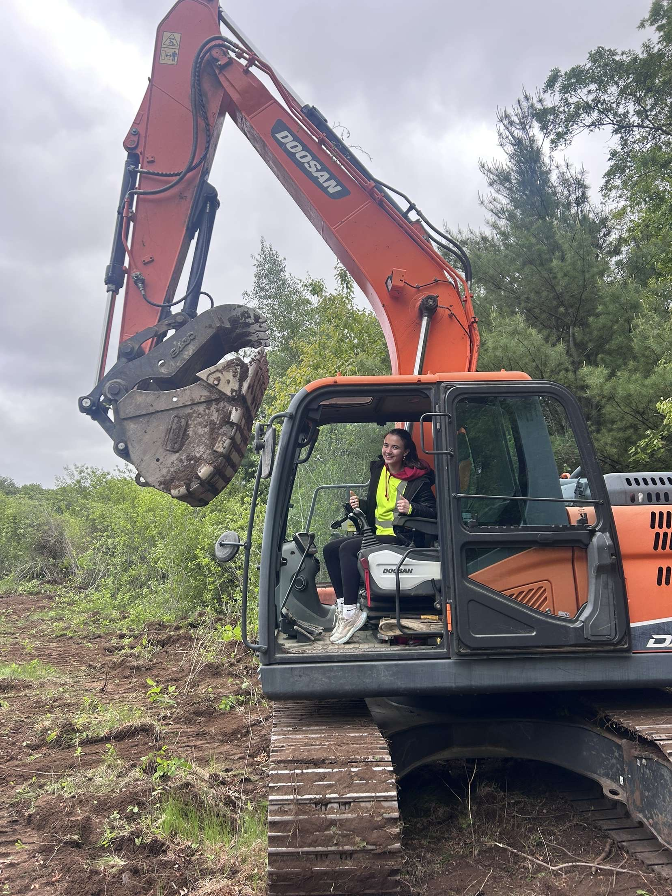
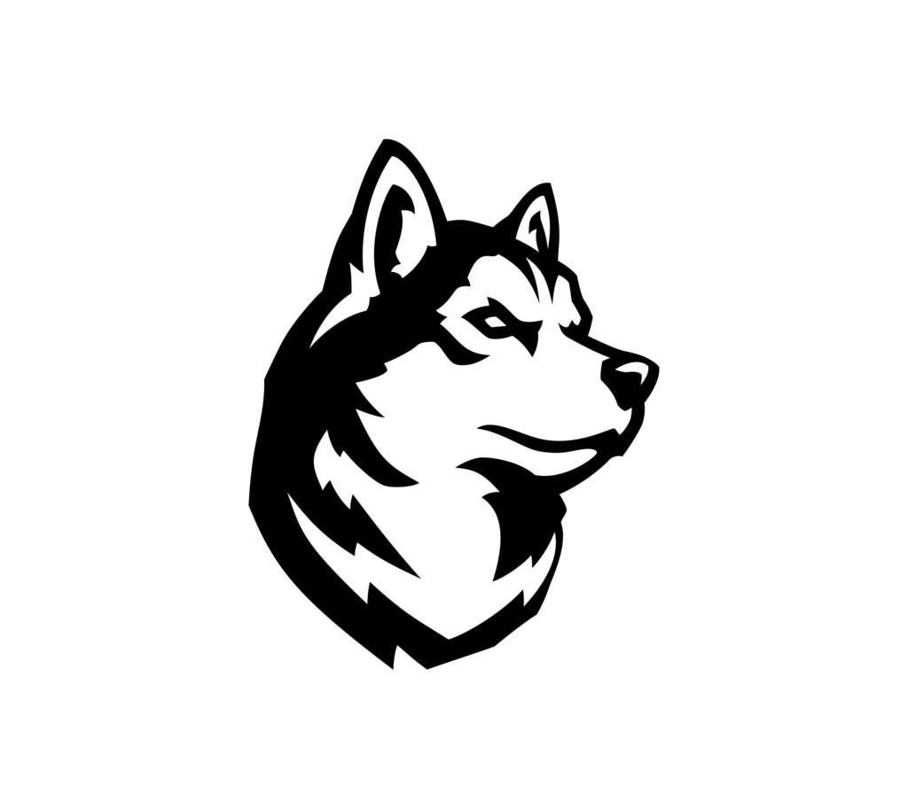
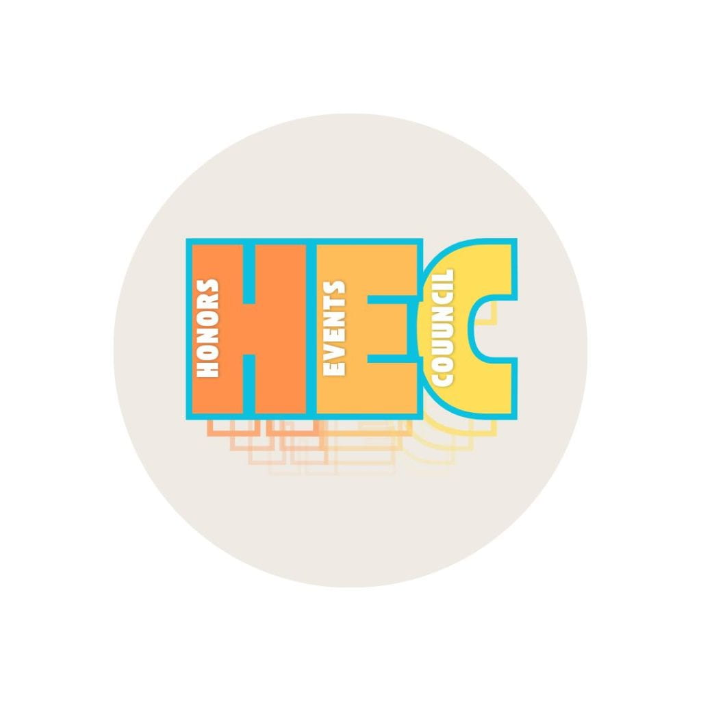

Candidate for BS in Electrical and Computer Engineering · Minor in Philosophy
GPA: 3.92 · Dean's List · John Martinson Honors Program Coursework: Circuits & Signals, Embedded Design, Fundamentals of Networks, Technology & Human Values, Computing Fundamentals, Calculus 1-3, Differential Equations, Physics 1-2 Activities: Lead360 Honors Cohort, Italian Club, Community Volunteers Program, Catholic Center
Newton Country Day School — Newton, MA
2017 – 2025
Graduated with High Honors
Leadership: Student Body President, Class Vice President, Co-Founder of Global Citizens Committee, Student Mentor & Retreat Leader, Admissions Ambassador, Eucharistic Minister Athletics: Varsity Cross Country (4 years), Varsity Track and Field Tutoring: Math Tutor, Writing Tutor
Skills & Competencies
Programming
C++PythonArduinoMATLAB
Software & Design
Claude CodeSolidWorksOnshapeAutoCADKiCadGitHubIntel Quartus PrimeLTSpiceArduino IDEThonny IDE
Forge: a Sherman Center Program, Northeastern University
September 2026 – Present
Hardware Product Lab Member, Team Electrical Engineer — Cooking Robot
As the team's electrical engineer, I program the Arduino, assemble the electronics, and work on PCB design in KiCad to customize the board
Our team is building a cooking robot that stores dry ingredients and, at the press of a button, dispenses them in preset measurements, so there is no need to measure each ingredient out by hand; I came up with the product idea
Forge is Northeastern's student-run product development studio, where members work on a semester-long team project spanning electronics, CAD, and coding
Motion Station: Boston Children's Museum Exhibit — Northeastern University
January – May 2026
GE 1502 Team Project — Client: Boston Children's Museum
The Boston Children's Museum commissioned our four-person team to design an interactive exhibit that teaches mechanical engineering to children ages 4–8, themed around Europe and the Pixar film Cars
I built all of the electronics and wrote the MicroPython code: a Raspberry Pi Pico polls a break beam sensor every 50 ms, and when the car passes, it streams a WAV file I created of "Life is a Highway" over I2S to a MAX98357A class D amplifier and speaker while animating an addressable LED strip, updating the LEDs every 8th audio chunk so the Pico isn't overloaded
I designed the enclosures, gears, and internal supports in AutoCAD, then laser-cut, painted, and assembled the Italy-themed box and all of its components
Children mount nine interchangeable plywood spur gears (4, 9, and 14 cm in diameter) onto pegs and turn them to drive a string-and-pulley loop that moves a toy car, demonstrating gear ratios through trial and error
At the museum on April 12, 2026, children spent an average of 102 seconds at the exhibit (goal: 90) and used an average of 6 gears (goal: 3); the project cost $111.03 of its $120 budget
Our three-person team built a custom strategy game for a client, a civil engineering student interested in transportation and the Netherlands, within a $100 budget and an eight-week timeline; we translated his needs into functions and constraints (2–6 players, 10–15 minute games, portability, and durability) and ranked design traits using a pairwise comparison chart
I built all of the electronics hardware, wiring three push buttons, six LEDs arranged as two traffic lights, an addressable LED strip, and a 16x2 I2C LCD to a Raspberry Pi Pico housed in a laser-cut wooden box, and I helped write the code
The client chose our project as his favorite
The system runs 45-second timed rounds, displaying the countdown on the LCD and traffic lights, while the LED strip randomly selects which of four trivia decks each team answers from
Autonomous Underwater Vehicle Challenge — MIT Beaver Works Summer Institute
July – August 2024
Instructor: Mohamed Saad Ibn Seddik
In MIT Beaver Works Summer Institute's four-week Autonomous Underwater Vehicle Challenge, my team programmed a BlueROV2 to navigate a pool without human control
Using Python and ROS, we built separate nodes for depth control, lane following, and AprilTag detection, each feeding PID controllers that drove the vehicle's thrusters
To help the AUV tell which side of the pool it was on, we placed AprilTag markers (similar to QR codes) on every side of the pool, anchoring them underwater by attaching them to rocks we found outside MIT, which earned our team the Master Navigator Award
In the final challenge, our AUV went head-to-head against another team's: both vehicles searched the pool, and the first to detect the other with its camera flashed its lights; our AUV found the other first

AprilTags anchored with rocks

Pool testing

Inside the BlueROV2

Our team with the AUV
GEO Engineers — Boston, MA
April – June 2025
Engineering Intern
GEO Engineers is a geotechnical and environmental engineering firm serving transportation, development, industrial, and natural-resources projects nationwide, and its Boston team specializes in complex urban development projects
I contributed to geotechnical engineering projects across both office and field work
My work included soil and material sampling, site investigations, boring logs, and geotechnical drawings

Field work

Sampling equipment

On site
Intelligent Urban Infrastructure — Independent Research
2022 – Present
IoT Traffic-Light Model
Since 2022, I have been designing and building an IoT traffic-light model to reduce the energy wasted by traffic lights that are always on
Year 1: built a two-light intersection controlled by an Arduino Uno WiFi Rev2 that turns on only when a smartphone, representing a car, connects over Bluetooth Low Energy; across 10 trials, I recorded connection and disconnection distances, and the lights turned on and off with every successful connection
Year 2: added a pedestrian component, in which a second Arduino with a GPS module sends its speed to the traffic light over WiFi using MQTT, and the light gives the green first to the pedestrian or the vehicle depending on the speed it receives; the model worked without error in all 20 trials
Placed 3rd (2023) and 2nd (2024) at the Massachusetts Regional Science Fair, received the US Air Force Award, and advanced to state competitions
I am continuing to expand this research; I recently built an interactive simulation of a demand-responsive intersection that stays dark until a connected car or pedestrian is in range, using my prototype's measured Bluetooth range and GPS speed data to compare its energy use against an always-on signal
Train first-year engineering students on safe operation of 3D printers, laser cutters, woodshop equipment, and hand tools in the First-Year Engineering Learning & Innovation Center (FYELIC)
Help students with their first-year engineering coursework, including MATLAB, Python, Raspberry Pi, Onshape, AutoCAD, and ethics
Maintain equipment, enforce safety protocols, and help students with their course projects

Northeastern University Undergraduate Admissions
May 2026 – Present
Husky Ambassador
Selected as one of the undergraduate student leaders who represent Northeastern to prospective students and families year-round
Completed a four-week training program covering campus history, academic programs, and public speaking before becoming a certified tour guide
Lead 60–75 minute campus tours for prospective students and families
Draw on leadership, concise communication, and storytelling to keep tour groups engaged

Honors Events Council, Northeastern University
September 2026 – Present
Board Member — John Martinson Honors Program
Plan and execute social and professional development events that strengthen the Honors community, connecting current students with alumni and faculty
Serve as Event Lead, managing logistics, budgets, vendor coordination, and marketing for co-curricular programming for upper-class Honors students
Part of the John Martinson Honors Program, a selective community focused on empowering students to create meaningful impact on campus and beyond
EVkids
January 2026 – Present
Tutor Coordinator
Coordinate Northeastern's cohort of 15+ volunteer tutors for EVkids, a Boston-based nonprofit (headquartered in Dorchester) that empowers inner-city youth with the skills and confidence to realize their potential
Recruit and train new tutors each semester, schedule weekly one-on-one mentoring sessions for academically vulnerable students in grades 3–12, and lead team meetings, reflections, and trainings
Serve as an active tutor, building long-term mentoring relationships with students through EVkids' after-school tutoring program
Community of Sant'Egidio
2019 – Present
Community Volunteer
Active volunteer with the Community of Sant'Egidio, a Catholic lay movement founded in Rome in 1968 and now present in over 73 countries with 60,000+ members worldwide
Participate in community service programs supporting refugees, the homeless, and elderly community members, including meal services, visits to care facilities, and Peace Schools for children
Engage in the organization's mission of social assistance, peaceful conflict resolution, and interreligious dialogue for peace